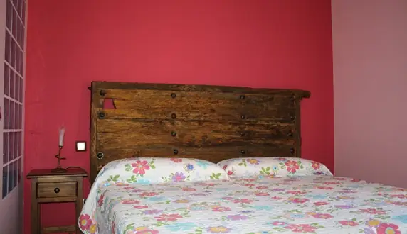
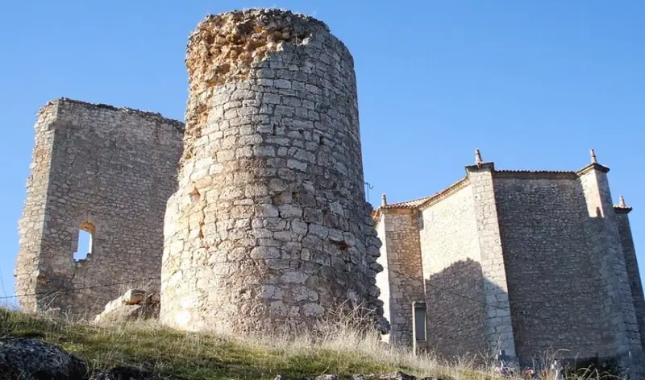
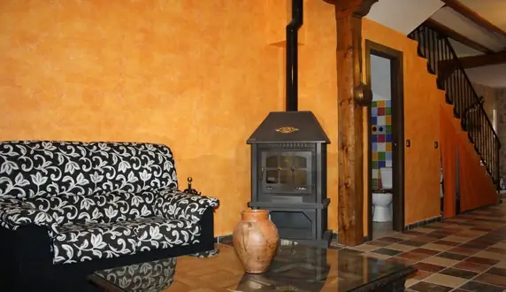
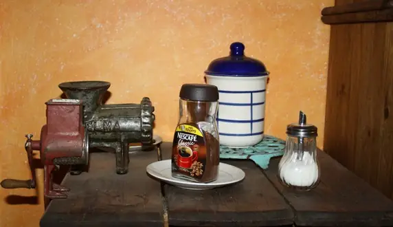
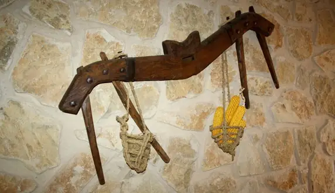
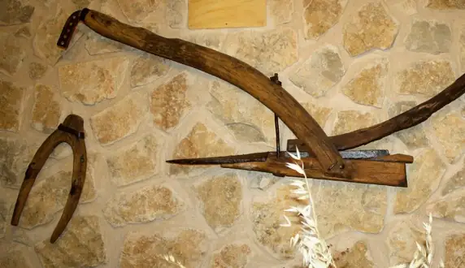
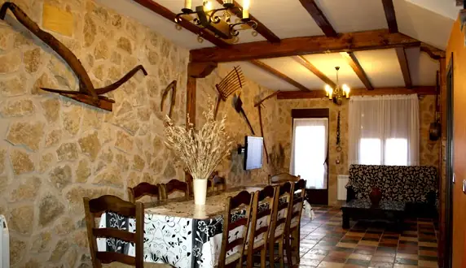
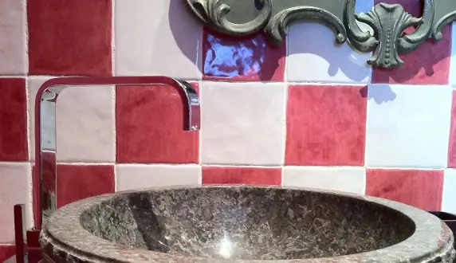
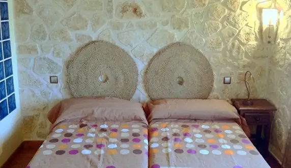
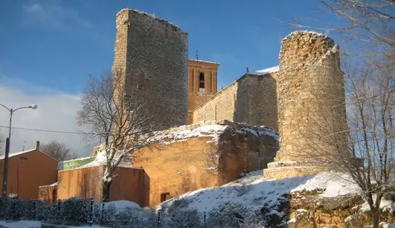
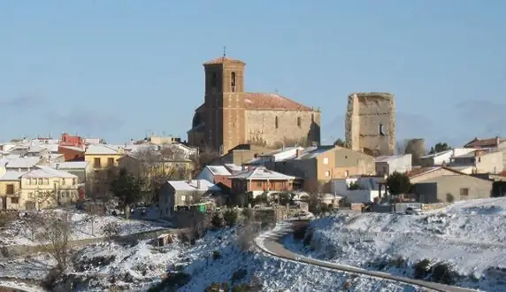
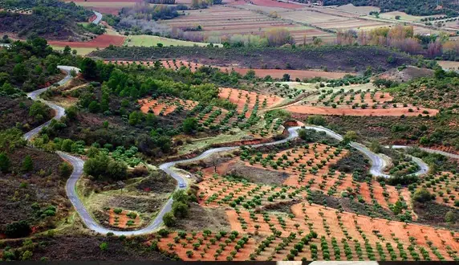
- Río Tajuña
- Aljibe medieval
- Mirador del Peñasco
- Brihuega
- Pastrana
- Horche
- Tendilla
- Pantano de Entrepeñas
- Sacedón
- Durón
C/ Mayor, 30 · 19411 Valfermoso de Tajuña (Guadalajara)
949 267 052 · 659 049 433 · 629 149 110